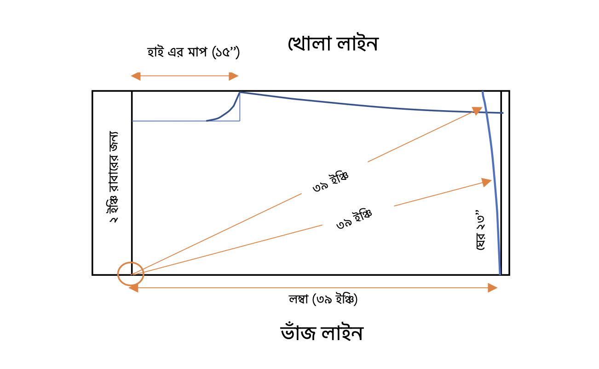

প্লাজু সেলোয়ার প্যাটার্ন ডায়াগ্রাম
নোটস:
প্লাজু নরমাল সোলোয়ারের মতোই, তবে এখানে ঘেরের পরিমাপটা অনেক বেশি থাকে,
সেজন্য বেশি বহরের কাপড় নিতে হবে।
প্লাজুর ক্ষেত্রে ঘেরের পরিমাপ ২০ থেকে ৬০ ইঞ্চি পর্যন্ত হয়ে থাকে।
নিচের ২ ইঞ্চি না নিয়ে হেম বাই পাইপিং সেলায়ের জন্য ১ ইঞ্চি বার এর চেয়েও
কম নেয়া যেতে পারে।
নিচে দুই পাশে যেন ঝুলে না পড়ে সেজন্য ভাজলাইনের নিচে পিভট ধরে লম্বার মাপ
অনুসারে নিচের দিকে রাউন্ড করে কাটতে হবে।